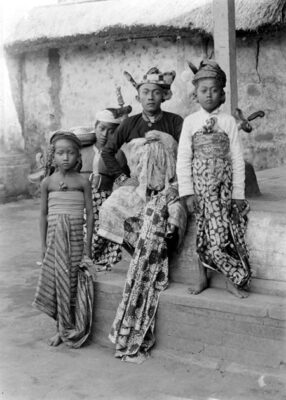
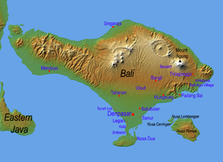

ბალი — ინდონეზიის ერთ-ერთი კუნძული. მდებარეობს მცირე ზონდის კუნძულების ჯგუფში, კუძულ იავასა და ლომბოკს შორის. ბალი ამავე დროს ინდონეზიის ერთ-ერთი პროვინციაა მის 33 პროვინციას შორის. დედაქალაქია — დენპასარი.

ჯერ კიდევ ჩვენს წელთაღრიცხვამდე 2000 წელს, ბალი დასახლებული იყო ავსტრონეზიური ხალხებით, რომლებიც აქ გადმოსახლდნენ კუნძულ ტაივანიდან სამხრეთ-აღმოსავლეთ აზიის სანაპიროს გამოვლით. კულტურულად და ენობრივად, ეს ხალხი ახლოს იყო ინდონეზიის არქიპელაგის სხვა ხალხებთან, ფილიპინებისა და ოკეანეთის ხალხებთან. კუნძულზე აღმოჩენილია ამ პერიოდის ქვის იარაღები.
ბალი მდებარეობს კუნძულ იავადან 3,2 კმ-ით აღმოსავლეთით და ეკვატორიდან დაახლოებით 8 გრადუსით სამხრეთით. ბალის და იავას ერთმანეთისგან ყოფს ბალის სრუტე. აღმოსავლეთიდან დასავლეთისკენ, კუნძულის სიგრძეა 153 კმ, ხოლო ჩრდილოეთიდან სამხრეთის მიმართულებით 112 კმ. საერთო ფართობი შეადგენს 5632 კმ²-ს.
ბალის სტუმრების რიცხვი განსაკუთრებით გაიზარდა 2002 და 2005 წლების ტერორისტული აქტების შემდეგ. სტუმრების მთავარ მიზანს ამ აქტების შედეგად დაზიანებული ბალის ტურისტული ინდუსტრიის აღდგენა წარმოადგენს. ამის ერთ-ერთი მაგალითია 2010 წლის აპრილში კუნძულზე გამართული „მსოფლიოს გეოთერმული კონგრესი“.
ბალიზე მოგზაურობა ნამდვილი ტურისტული თავგადასავალია. პოპულარულია თავისი ულამაზესი პლაჟებით, კულტურული ღონისძიებებითა და სულიერი ატმოსფეროთი. შესანიშნავია უბუდის სასოფლო-სამეურნეო ტერასები, ტანაჰ ლოტის ტაძარი და კუტას სანაპირო.
ბალის, როგორც პერიფერიულ გასართობ კურორტად ჩამოყალიბების ისტორიის უდიდესი ნაწილის განმავლობაში, კუნძულს ასევე ჰქონდა მყარი სოციოპოლიტიკური და პირადი უსაფრთხოების რეპუტაცია, რაც არ გააჩნდა ზოგადად მთლიან ინდონეზიას. დასავლეთ პაპუაში, აკეჰსა და აღმოსავლეთ ტიმორში არსებული სეპარატისტული ამბოხებებით, რომლებიც ბოლო დროს უფრო გამწვავებულია სექტანტური კონფლიქტებით ქრისტიანებსა და მუსლიმებს შორის, ასევე ისლამური რადიკალიზმის აღორძინებით, ინდონეზია „ქრონიკულად კრიზისული“ დესტინაციაა, რომელმაც ვერ შესძლო ბოლომდე მიეყვანა თავისი პოტენციალი და ჩამოყალიბებულიყო მთავარ ტუსისტულ ქვეყნად. გამომდინარე აქედან, ბალის ტურიზმის ხელმძღვანელობისთვის კონტრასტი ინდონეზიასთან (არა ინდონეზია, მშვიდობის ანკლავი, ინდუიზმი და არა ისლამი) და მის იდენტობასთან, როგორც განცალკევებული დესტინაცია, გახდა მისი საერთაშორისო ბრენდინგის, მისი, როგორც ეგზოტიკურ ტროპიკულ სამოთხედ წარმოჩენის მთავარი ელემენტი.